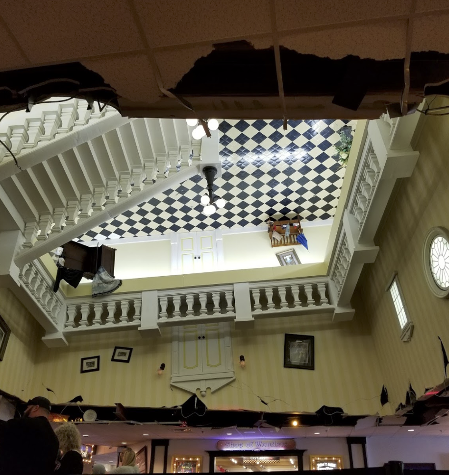
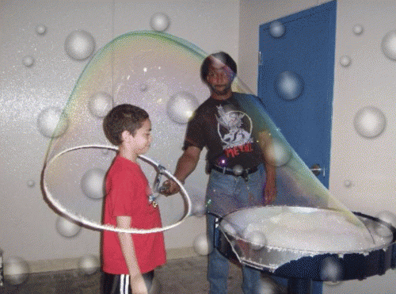
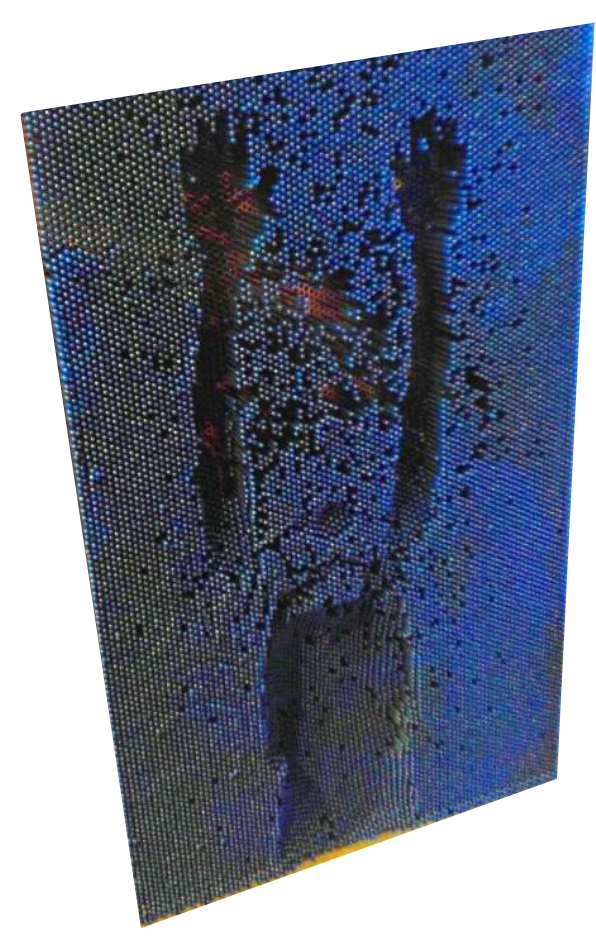

"Very fun and even educational. Lots of exhibits about space, music, animals, photography, aging, colors, bubbles, weather and the list goes on and on. I highly recommend!!""

"It has a lot of things familiar with discovery museums, but with the 4d movie and coaster ride, it made the admission price well worth it."


"We have been to other wonder works locations. They are all the same. Interesting and lots to do.""

"When I went to the Myrtle Beach location, I really enjoyed it, but I think that was a holiday romance, as the location in Pigeon Forge feels so similar to the one in Myrtle Beach. They have the 360 bikes, the ropes course, the bed of nails, the bubbles exhibit, an arcade, and laser tag, just like the Myrtle Beach location."
 "The Lighting; the Colors, the Sounds, the Optical Illusions, and all the Activities, created fun for All."


"The main entryway is an optical illusion called the Inversion Tunnel, made ostensibly so that you can enter the exhibits which are said to be "upside down", like the building's "upside down" exterior. The tunnel itself is simply a stationary walkway through a large, steadily rotating tunnel painted with a spiral design in ultraviolet-activated colors. The spinning, Day-Glo spiral nearly guarantees vertigo while walking across. Yes, it can be bypassed for those who have inner-ear or other problems, but for most kids and adults it's a nifty little trompe-l'oeil trick and can be revisited if desired."